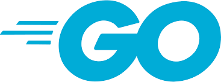
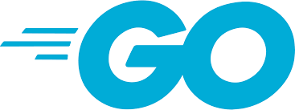

Es difícil predecir con exactitud los lenguajes de programación más utilizados en 2023, ya que puede haber cambios impredecibles en la demanda y las tendencias de la industria. Sin embargo, basándonos en las tendencias actuales, es posible que los siguientes lenguajes de programación sigan siendo populares en 2023:
- Java: Java ha sido otro lenguaje de programación muy popular durante muchos años y se utiliza en una amplia variedad de aplicaciones empresariales. A pesar de la creciente popularidad de otros lenguajes, Java sigue siendo uno de los lenguajes más utilizados en la actualidad.
- JavaScript: JavaScript es el lenguaje de programación principal para el desarrollo web y ha sido cada vez más popular debido a la creciente demanda de aplicaciones web interactivas y dinámicas.
-
- Python: Python ha sido uno de los lenguajes de programación más populares durante varios años y es probable que siga siendo así en 2023. Es fácil de aprender y es utilizado en una amplia gama de aplicaciones, desde ciencia de datos hasta desarrollo web.
- Swift: es el lenguaje de programación principal para el desarrollo de aplicaciones para iOS y macOS, y es probable que continúe siendo popular en el futuro.
- Go: es un lenguaje de programación de sistemas que se ha vuelto muy popular en los últimos años debido a su capacidad para manejar aplicaciones de alta complejidad y escalables. Es probable que continúe ganando popularidad en el futuro debido a su enfoque en la concurrencia y la eficiencia.
- Estos son solo algunos de los lenguajes de programación que podrían seguir siendo populares en 2023, pero la lista puede cambiar en función de los cambios en las necesidades y demandas del mercado.